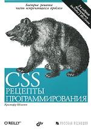

Разработка веб-узлов
Аннотация
Еще несколько лет назад слово Internet было загадочным и непонятным, а сегодня об этой компьютерной сети слышал практически каждый, многие имеют опыт практической работы с Internet. Такую феноменальную популярность Internet приобрел благодаря одной из своих служб, а именно- службе WWW. Данная служба позволяет просматривать информацию из сети в виде красочных текстово-графических страниц, делая процесс просмотра приятной и увлекательной процедурой. Многие коммерческие организации почувствовали растущую популярность Web и разместили свою информацию в данной службе, предоставив ее миллионам пользователей Internet. Microsoft, Sony, Panasonic, Intel и многие другие корпорации-гиганты воспользовались данным средством для привлечения и информирования своих клиентов. Однако Web — не только удел сильных мира сего, существует огромное число серверов малых организаций и частных лиц, на которых можно найти самую разнообразную информацию.
Итак, Web — популярнейшая служба в Internet, а информация, опубликованная на серверах этой службы,- наиболее популярная и читаемая. Данное обстоятельство увеличивает число желающих опубликовать свою информацию на страницах Web, а для этого необходимы люди, умеющие быстро и грамотно создавать подобные страницы и связывать их в единый информационный ресурс (сайт). Специалисты, умеющие выполнять такую работу, всегда востребованы.
Научитесь создавать Web сайты своими руками, и вы обеспечите себя интересной и высокооплачиваемой работой.
Рекомендуемая литература
-

CSS — каскадные таблицы стилей. Подробное руководство, 3-е издание
ISBN: 5-93286-107-Х, 978-5-93286-107-3
Наиболее полное и подробное справочное руководство по CSS. В книге рассматриваются все тонкости стилевого оформления html-страниц, особенности интерпретации CSS разными браузерами и пути решения возникающих проблем.
Автор, Эрик Мейер — признанный эксперт в области веб-стандартов.
-

CSS. Рецепты программирования, 2-е изд
ISBN: 978-5-9775-0075-3
В книге приведено большое количество практических примеров по работе со стилевым оформлением html-страниц. Настоящая «поваренная книга» веб-разработчика.
-
Пуленепробиваемый Web-дизайн
ISBN: 5-477-00301-4
Настоящее издание посвящено применению XHTML и CSS для создания сайтов, отличающихся доступностью для различных браузеров, устройств и программ, гибкостью и готовностью к любым ситуациям. В каждой главе книги обсуждается один компонент Web-страницы. Рассматривается как общепринятый способ его создания, так и непробиваемый, позволяющий получить адаптируемый и гибкий компонент. В последней главе все компоненты сводятся воедино, и описывается процесс создания готового шаблона непробиваемой страницы.
На реальных примерах вы научитесь создавать гибкие, адаптируемые и доступные сайты.